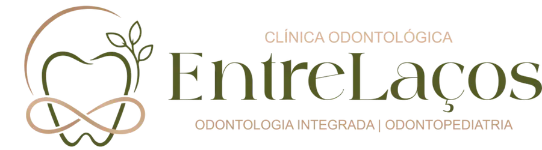
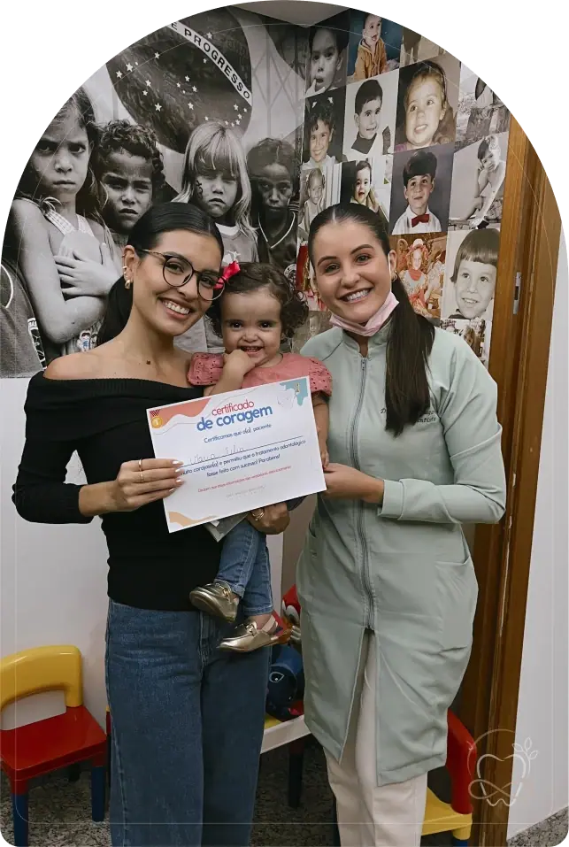
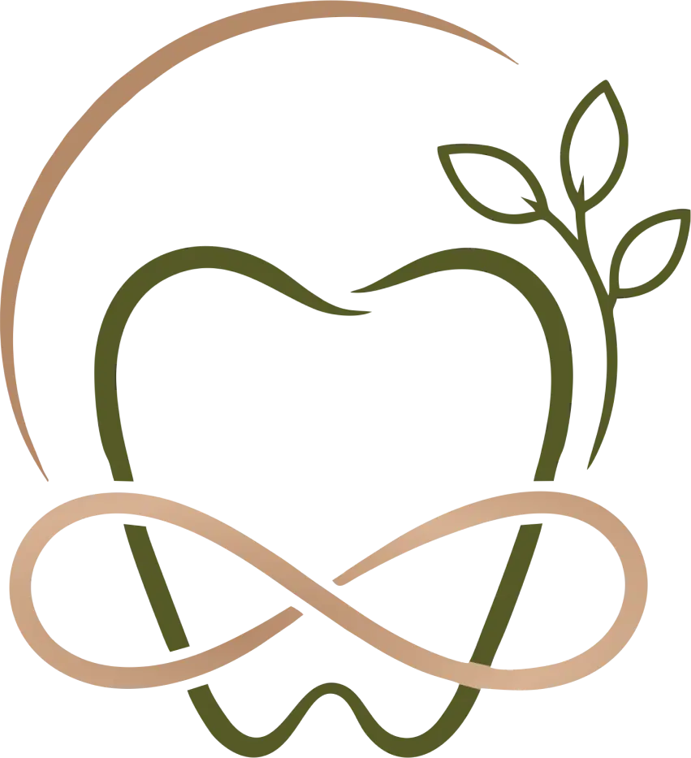
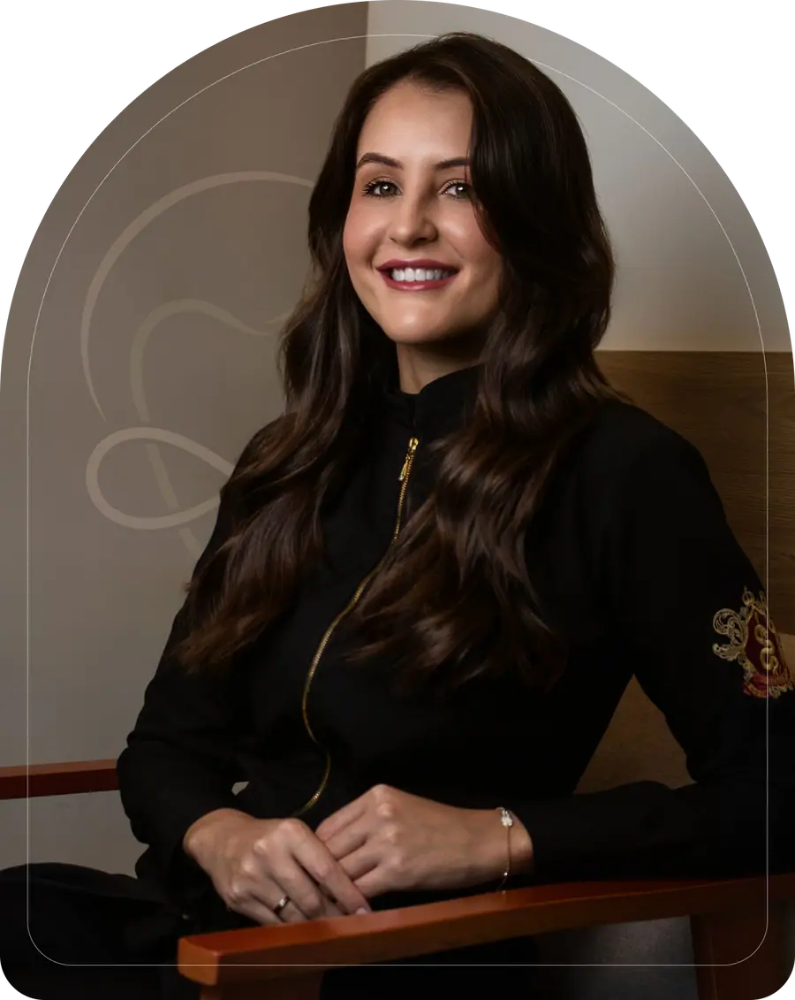
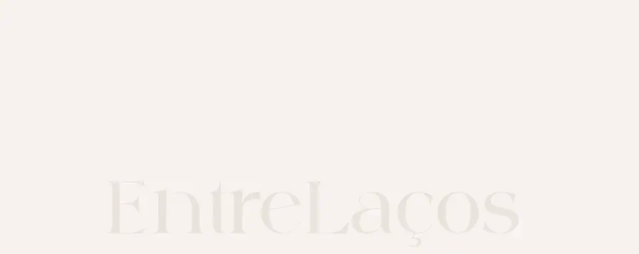

Paleta de cores
Medida no navegador: fundos ponderados pela área ocupada, textos pela quantidade de caracteres. Destaques reúnem cores saturadas e fundos de botão.
Fundos
#F7F2EF
Fundo · 76.0%
rgb(247, 242, 239)
rgb(247, 242, 239)
#575B28
Fundo · 24.0%
rgb(87, 91, 40)
rgb(87, 91, 40)
Textos
#575B28
Texto · 63.7%
rgb(87, 91, 40)
rgb(87, 91, 40)
#E9E4DC
Texto · 17.5%
rgb(233, 228, 220)
rgb(233, 228, 220)
#000000
Texto · 9.7%
rgb(0, 0, 0)
rgb(0, 0, 0)
#F7F2EF
Texto · 5.8%
rgb(247, 242, 239)
rgb(247, 242, 239)
#FFFFFF
Texto · 1.9%
rgb(255, 255, 255)
rgb(255, 255, 255)
#D5AE8F
Texto · 1.2%
rgb(213, 174, 143)
rgb(213, 174, 143)
Destaques
#575B28
Destaque
rgb(87, 91, 40)
rgb(87, 91, 40)
#D5AE8F
Destaque
rgb(213, 174, 143)
rgb(213, 174, 143)
Tipografia
Caviar Dreams · Aa Bb Cc 0123
70% do texto · Se a sua cabeça não desliga, esta página é para você.Playfair Display · Aa Bb Cc 0123
19% do texto · Se a sua cabeça não desliga, esta página é para você.Escala usada (desktop 1440px)
| Tamanho | Peso | Família | Amostra |
|---|---|---|---|
| 91px | 400 | Playfair Display | Texto de exemplo |
| 76px | 500 | Playfair Display | Texto de exemplo |
| 72px | 400 | Playfair Display | Texto de exemplo |
| 70px | 400 | Playfair Display | Texto de exemplo |
| 65px | 400 | Playfair Display | Texto de exemplo |
| 48px | 400 | Playfair Display | Texto de exemplo |
| 42px | 500 | Against Regular | Texto de exemplo |
| 32px | 400 | Playfair Display | Texto de exemplo |
| 28px | 400 | Playfair Display | Texto de exemplo |
| 18px | 400 | Caviar Dreams | Texto de exemplo |
Mobile (390px): 40px/400, 36px/400, 32px/400, 28px/500, 24px/400, 16px/400, 15px/600, 14px/400 · H1 no mobile: sem h1 semântico
Tags
| Tag | Família | Tamanho | Peso | Altura de linha | Espaçamento | Caixa | Cor |
|---|---|---|---|---|---|---|---|
| <h2> | Playfair Display | 28px | 400 | 28px | normal | none | #575B28 |
| <h3> | Playfair Display | 32px | 400 | 38.4px | normal | none | #F7F2EF |
| <p> | Caviar Dreams | 18px | 400 | 27px | normal | none | #575B28 |
Botões
Recriados com os estilos computados reais. Efeitos de hover e animação não aparecem aqui; veja a seção de animações.
Agendar avaliação
fundo #575B28 · texto #FFFFFF · raio 0px · padding 24px 40px · 18px/400 none · 3x na páginaConhecer os tratamentos
fundo #B96F4800 · texto #575B28 · raio 0px · padding 24px 40px · 18px/600 none · 1x na páginaCards e containers
Nenhum card identificado.
Bordas, raios e sombras
12px
30px
100px
Sombras
Sem sombras relevantes.
Espaçamentos
- Largura do conteúdo mais comum: 1280px
- Padding vertical das seções (topo/base): 0px/0px (7x)
- Gaps mais usados (flex/grid): 20px, 35px, 16px, 11px, 15px, 5px
- Altura total da página: 6379px em 7 seções
Estrutura e ritmo de cores das seções
Cada faixa é uma seção de topo, com altura proporcional e a cor ou imagem de fundo real.
1. hero O cuidado com você começa antes do consultório 734px · padding 0px/0px
2. 500+ 156px · padding 0px/0px
3. servicos Nossos tratamentos 1480px · padding 0px/0px
4. diferenciais Razões concretas para confiar na EntreLaços 1138px · padding 0px/0px
5. Uma clínica que trata gente, não apenas dentes 1027px · padding 0px/0px
6. prova-social O que nossos clientes dizem 493px · padding 0px/0px
7. cta-final Vamos criar um plano de cuidado que faça sentido para você? 828px · padding 0px/0px
Animações, ícones e bibliotecas
- Keyframes próprios: nenhum keyframe próprio
- Animações de entrada do Elementor: nenhuma
- Classes de scroll reveal da casa: scroll-top
- Ícones: 16 SVG, 0 ícones de fonte
- Bibliotecas e tags detectadas: ga4, happy-addons, jquery, lottie, swiper
Snippets da biblioteca presentes nesta página
- Nenhum snippet da biblioteca identificado.
Imagens do site




